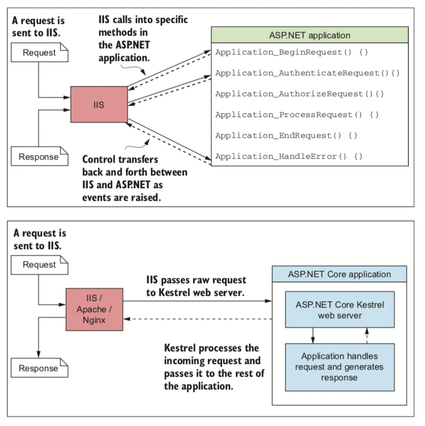

考虑到容易的构建
传统上，Web应用程序直接部署到服务器，或者部署到虚拟机。
虚拟机允许将操作系统安装在虚拟机硬件层中，从而抽象出基础硬件。
与直接安装相比，他具有多个优点，例如易于维护，部署和恢复。
不幸的是，他们在文件大小和资源使用方面也很繁重。
这就是容器的来源，容器的重量很轻，并且没有虚拟机的开销。他们由多层构成，不需要您在安装新操作系统时启动新操作系统。
这就意味着他们可以快速启动，非常适合快速配置。容器，尤其是Docker正迅速成为构建大型可扩展系统的首选平台。
容器从来都不是ASP.NET应用程序特别吸引人的选择，但是随着ASP.NET Core，.NET Core和Windows Docker的出现，这一切都在变化。在跨平台的.NET Core框架上运行的轻量级ASP.NET Core应用程序非常适合瘦容器部署。您可以在第16章中了解有关部署选项的更多信息。
与在每个平台上运行一样,.NET的卖点之一是仅能编写和编译一次的能力。您的应用程序被编译为中间语言（IL）代码，该代码是独立于平台的格式。如果目标系统已经安装.NETCore平台，则可以从任何平台运行已编译的IL.意味着，例如您可以在Mac或Windows计算机上进行开发，然后将完全相同的文件部署到Linux计算机上。ASP.NET Core和.NET Core终于实现了一次编译，无处不在的承诺。
如果您是一个.NET Framework开发人员，正在创建一个新的应用程序
如果您目前是.NET 开发人员，那么是否为新应用程序使用ASP.NET Core。微软已经承诺将继续为旧的ASP.NET框架提供支持，但显然他们的市重点主要放在新的ASP.NET Core框架上。从长远来看，如果您想利用新功能，ASP.NET Core很有可能成为您的选择。 ASP.NET Core是否适合您在很大程度上取决于您的要求以及您对使用处于早期产品的习惯。与以前的ASP.NET框架相比优点是：
- 跨平台开发和部署
- 以及性能为特色
- 简化的托管模型
- 定期发布，发布周期更短
- 开源
- 模块化功能
作为.NET开发人员，如果您不使用特定于Windows的特定结构（例如注册表），那么跨平台构建和部署应用程序的能力将为全新的应用程序之路打开大门，利用便宜的Linux托管在云中的VM，使用docker容器进行可重复的持续集成或在Mac上编写.NET 代码，而无需运行Windows虚拟机。ASP.NET Core与.NET Core的结合使所有这些成为可能。
注意随着2017年8月发布的.NET Core 2.0，可用的API数量急剧增加，是API表面积的两倍以上。
以前的ASP.NET框架的托管模型是一个相对复杂的模型，他依赖于Windows IIS提供Web服务器托管。在跨平台环境中，这种共生关系是不可能的，因此采用了另一种托管模型，该模型将Web应用程序与基础宿主分离。这次机会促成了Kestrel的发展 Kestrel：一种运行ASP.NET Core的快速跨平台HTTP服务器。
与以前的设计（IIS通过IIS调用应用程序中的特定点）不同，ASP.NET Core应用程序是控制台应用程序，他们自托管Web服务器并直接处理请求，如图1.6所示。从概念上将，这种托管模型要简单的多，尽管您不需要消除在生产环境中运行IIS（或同等版本）的需要，但是他允许您从命令行测试和调试应用程序。1.3
更改托管模型以使用内置HTTP Web服务器创造了另一个机会。过去性能一直是ASP.NET应用程序的痛点。肯定有可能构建高性能的应用程序-堆栈溢出(http://stackoverflow.com)证明了这一点，但web框架本身并未以性能为优先设计，因此最终可能成为障碍。 为了具有竞争力的跨平台，ASP.NET团队致力于Kestrel HTTP服务器。多年来TechEmpower(www.techempower.com/benchmarks)一直在各种语言的整个Web框架上运行测试。在纯文本基准测试的第13章，TechEmpower宣布带有kestrel的ASP.NET Core是最快的主流全栈Web框架，在所有框架中排名第十！

ASP.NET（顶部）和ASP.NET Core(底部)中的托管模型之间的区别。
在ASP.NET的早期版本中，IIS与应用程序紧密结合。
ASP.NET Core中的托管模型更简单;
IIS将请求移交给ASP.NET Core应用程序中的自托管Web服务器并接收响应，但对应用程序没有更深入的了解。
Web服务器：很难命名
为网络编程的困难之一是经常相互冲突的术语的混乱。例如，如果您过去使用过IIS，则可能将其描述为Web服务器或Web主机。相反，如果您曾经使用Node.js构建应用程序，则可能将该应用程序同样成为Web服务器。或者您已经调用了应用程序在其运行Web服务器的物理机！
同样，您可能已经为Internet构建了一个应用程序，并将其成为网站或Web应用程序，这可能基于其显示的动态程度而有所不同。
在本书中，当我在ASP.NET Core上下文中说“Web服务器"时是指作为ASP,NET Corey应用程序一部分运行的HTTP服务器。默认情况下，这是Kestrel Web服务器，但这不是必需的，如果需要，可以编写替换Web服务器并用Kestrel代替。
Web服务器负责接收HTTP请求并生成响应。在早期版本的ASP.NET中，IIS扮演了这个角色，但是在ASP.NET Core中kestrel是web服务器.
在本书中，无论他们仅包含静态内容还是完全动态内容，我将仅适用术语web应用程序来描述ASP.NET Core应用程序，无论哪种方式，他们都是可以通过Web访问的应用程序，因此名称似乎最合适！
对kestrel进行的许多性能改进并非来自于ASP.NET团队本身，而是来自GitHub上的开源贡献者。公开进行开发意味着您通常可以看到修补程序和功能，让您更快的投入生产环境中，.NET Framework的ASP.NET的早期版本，将具有较长的发布周期。 相反，ASP.NET Core与底层.Net平台完全脱离。整个Web框架以NuGet包的形式实现，独立于其构建的基础平台。
注意：NuGet是.NET的软件包管理器，可以将库导入到项目中。相当于Ruby Gems,JavaScript的npm或Java的maven。
为了实现这一点，ASP.NET Core被设计为高度模块化，并尽可能减少与其他功能的联系这种模块化使其使用于依赖项的按需付费方法，您可以从一个简单的应用程序开始，仅添加所需的其他库，这与以前ASP.NET应用程序的那样，甚至MVC都是可选包，但是不用担心，这种方法并不意味着ASP.NET Core缺少功能;这意味着您需要选择加入，基础设施的一些关键改进包括：
- 用于定义应用程序行为的中间件管道
- 内置的依赖注入的支持
- 结合UI（MVC）和API(Web API)基础架构
- 高度可扩展的配置系统
- 默认情况下使用异步编程实现云平台的可伸缩